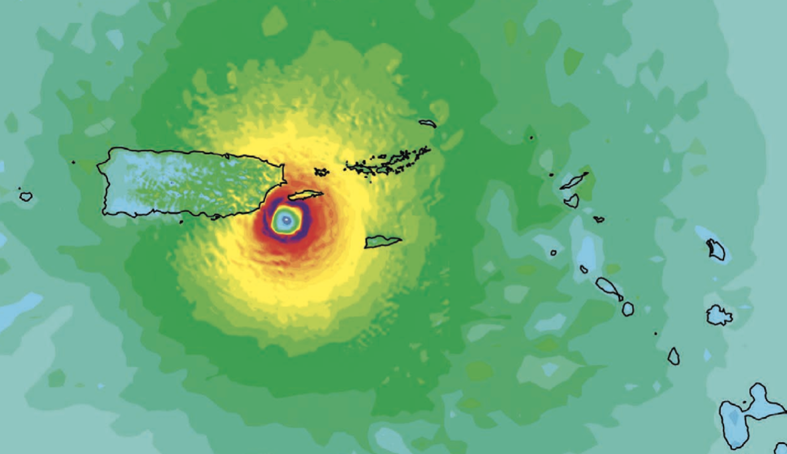

Sally 2020.
Sally 2020.
My current reserach focuses on studying downshear reformation in tropical cyclones. Downshear reformation is the process where a new low-level center develops within the asymmetric convection downshear. The reformation of the center can result in the system's intensity and trajectory, making prediction challenging

The atmospheric processes involved in a tropical cyclone are affected by topographical factors during and after landfall. Interactions with land are capable of changing the tropical cyclone’s structure, behavior, and impact on the landmass. However, one of today’s forecasting problems is that computer models cannot interpret many of the factors that influence surface weather over complex terrain, and they forecast the tropical cyclone’s behavior that would be expected if it was moving over a smooth landmass. This research project investigated the impact of high-resolution terrain data in Weather Research and Forecasting (WRF) model simulations of Hurricane María, focusing on its path over Puerto Rico..